Field Engineering Deployments
Project Case Studies
Validated on-site implementations in demanding mining and industrial environments.
Pipe & Open Channel Flow Data Acquisition & Field Calibration
On-site telemetry commissioning and secondary field calibration for electromagnetic and ultrasonic flowmeters operating in extreme mining environments. Integrated to edge RTUs via 4-20mA, Modbus RTU, and pulse output interfaces.
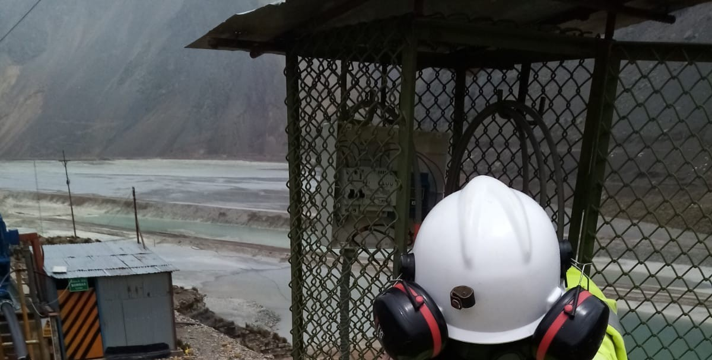
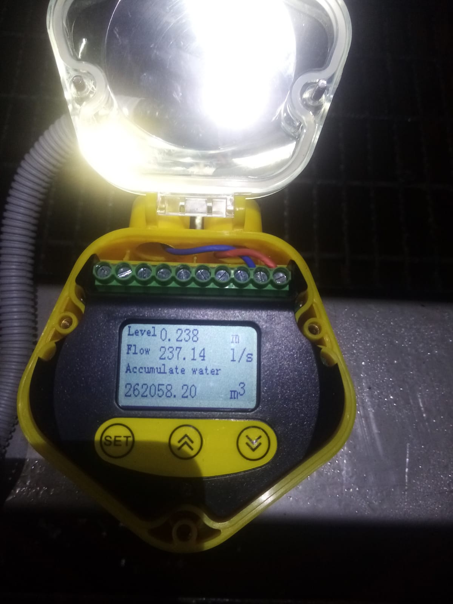
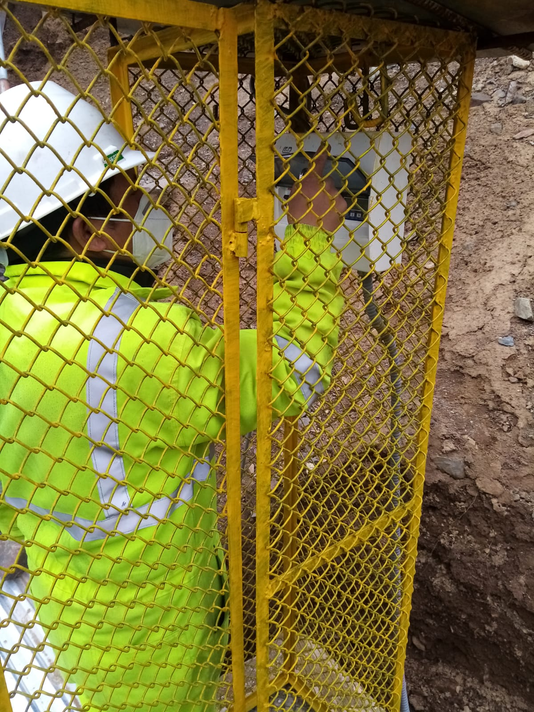
Substation Smart Meter Telemetry & Multi-Brand DCU Integration
Deployment of smart metering data acquisition systems in electrical substations and industrial general panels. Integration of multi-vendor billing meters through centralized Data Concentrator Units (DCU) using DLMS/COSEM and Modbus protocols.
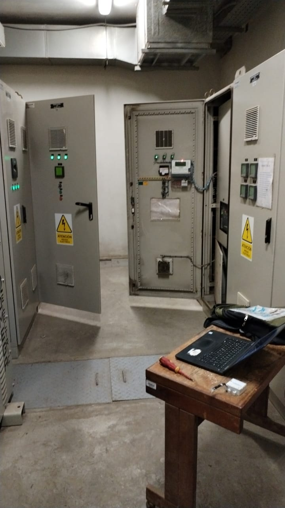

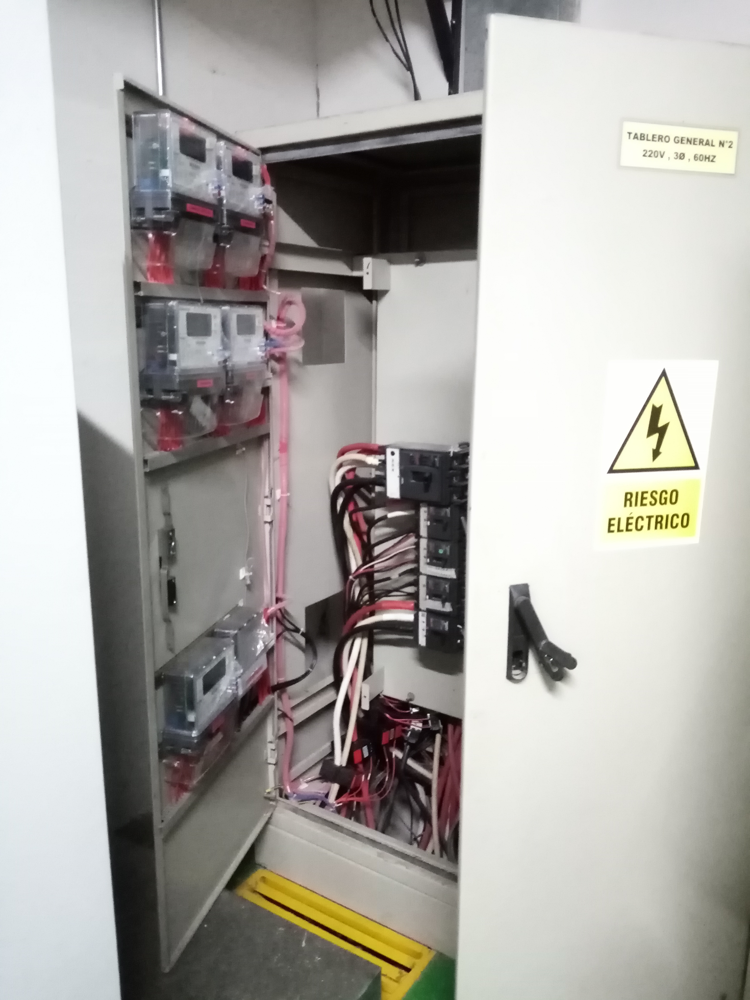
PLC, VFD & HMI Data Integration for Industrial SCADA
Complete engineering and commissioning of industrial automation systems, mapping variables from programmable logic controllers (PLCs) and variable frequency drives (VFDs) directly into local HMI screens and central SCADA dashboards.
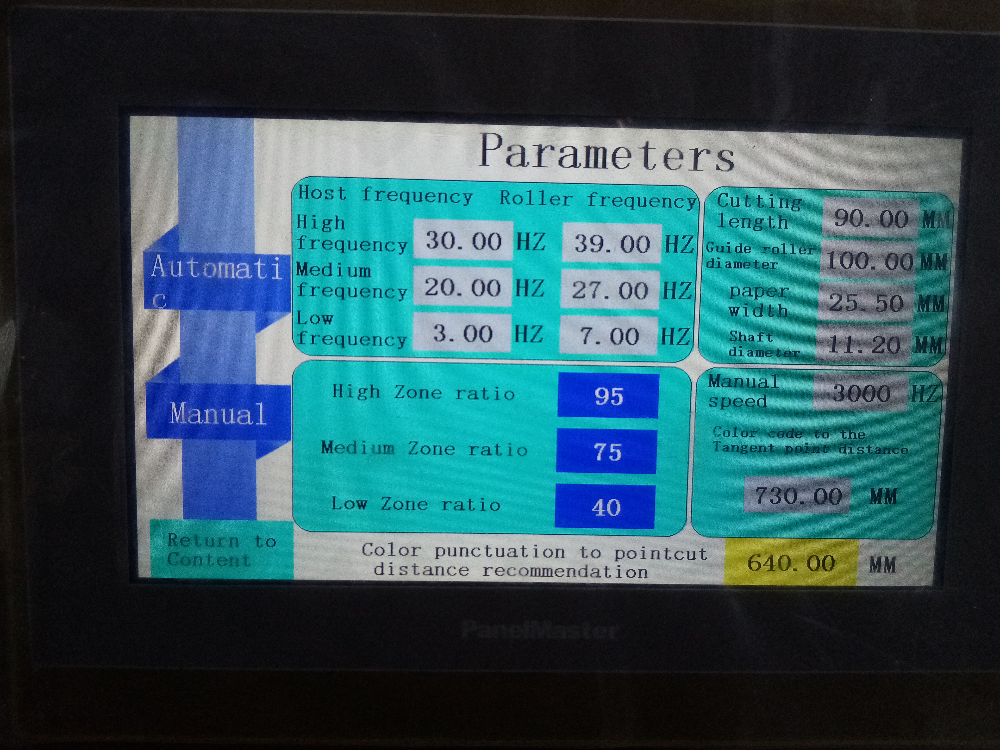
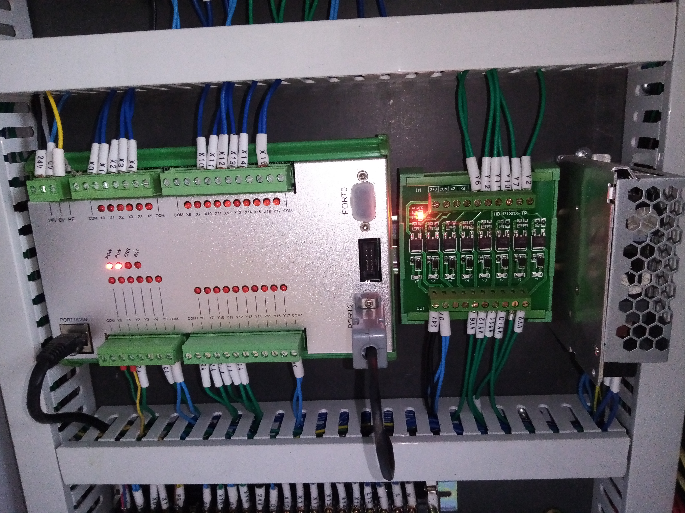
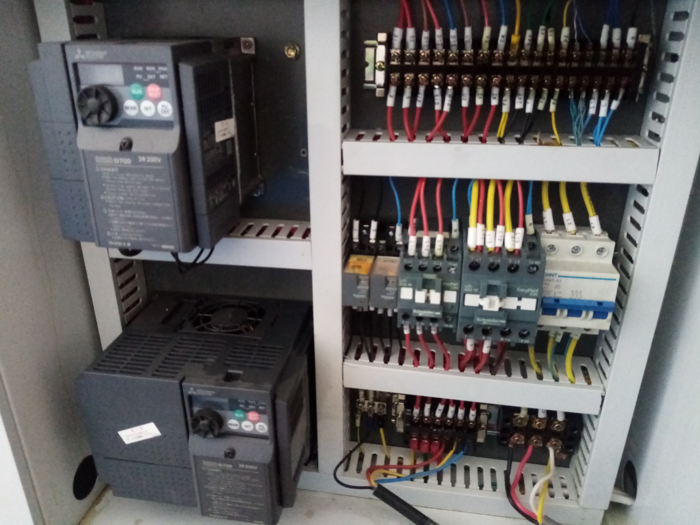
Fixed Gas Detection Systems Commissioning & Field Calibration
Specialized on-site calibration and loop verification for fixed industrial gas detectors in processing plants and hazardous areas. Ensuring strict metrological response and sensor health validation.
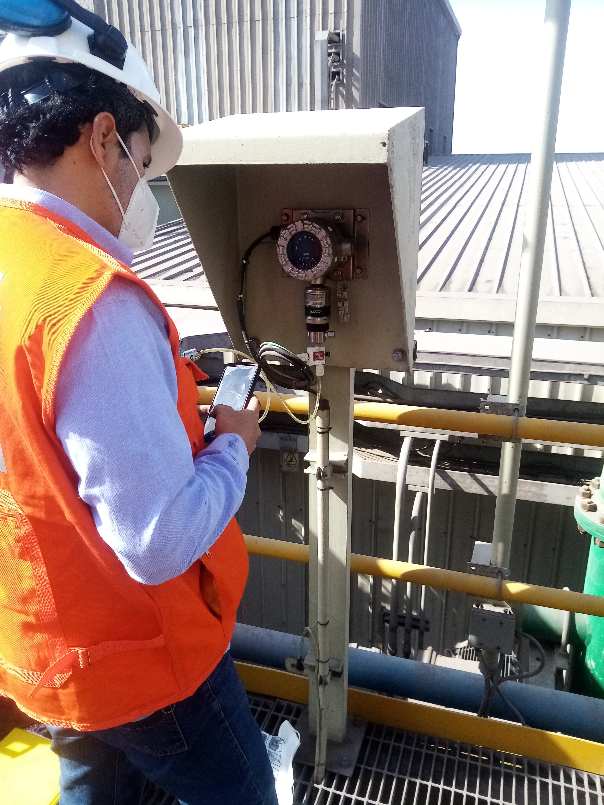
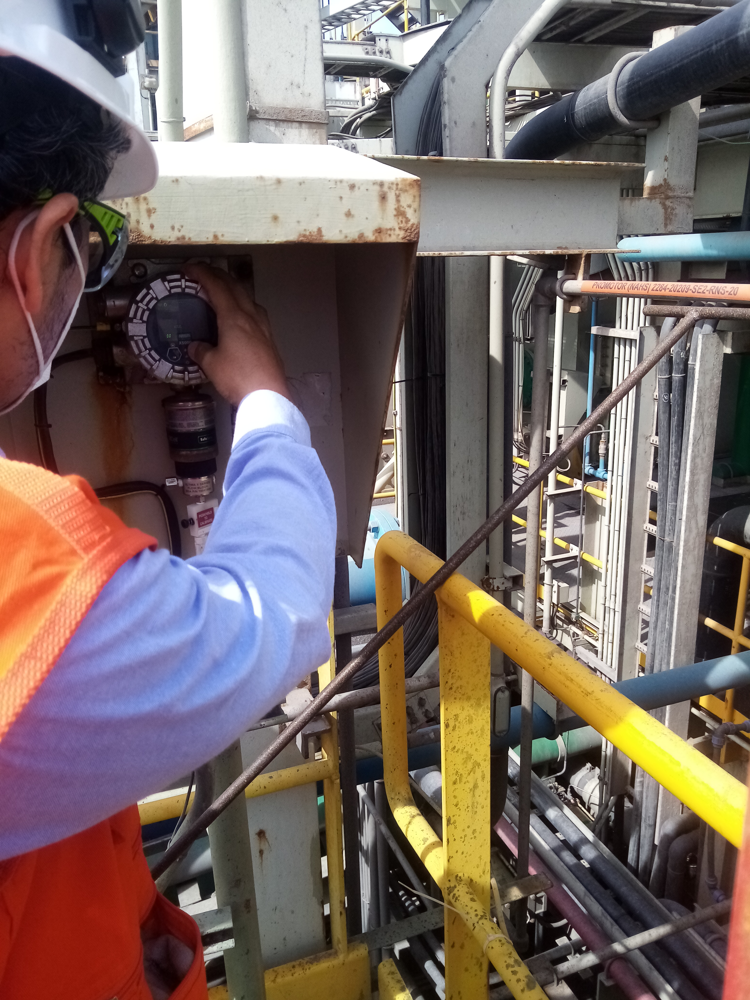
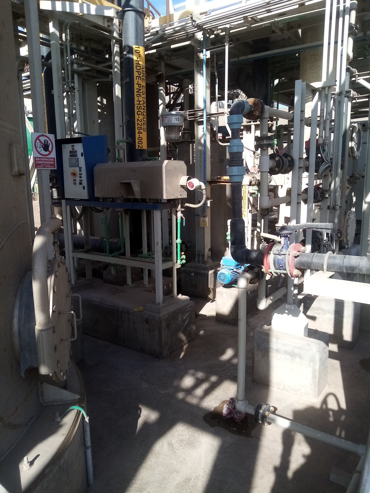